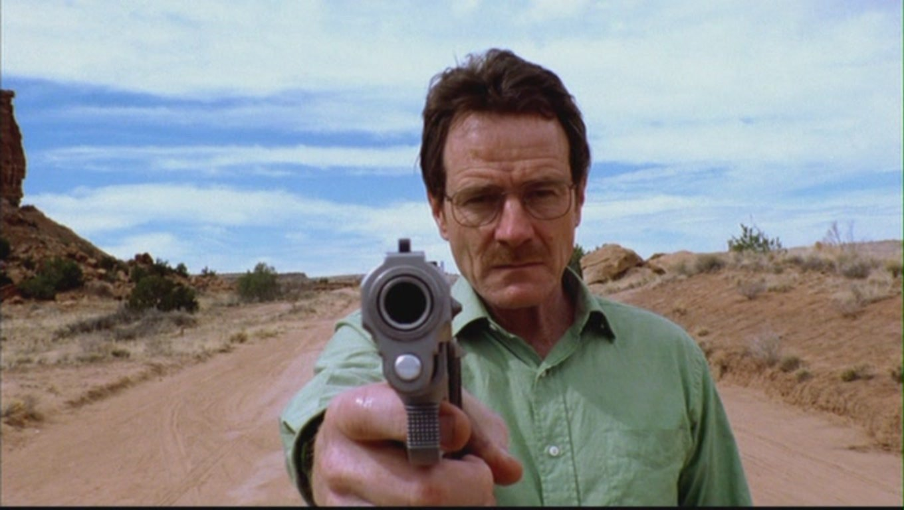
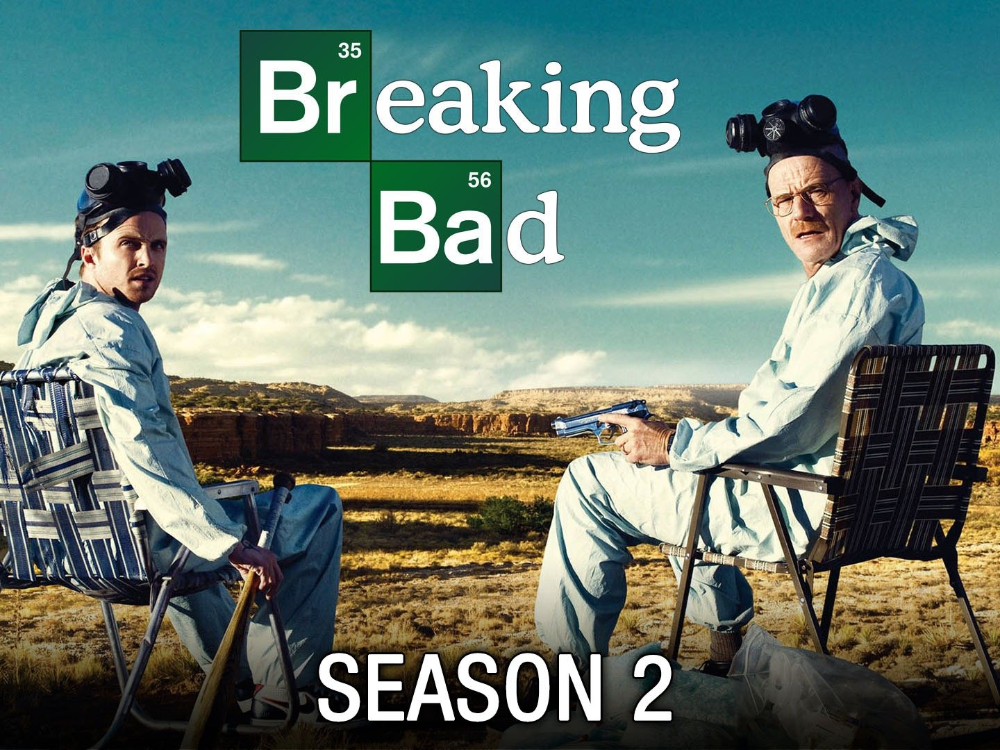
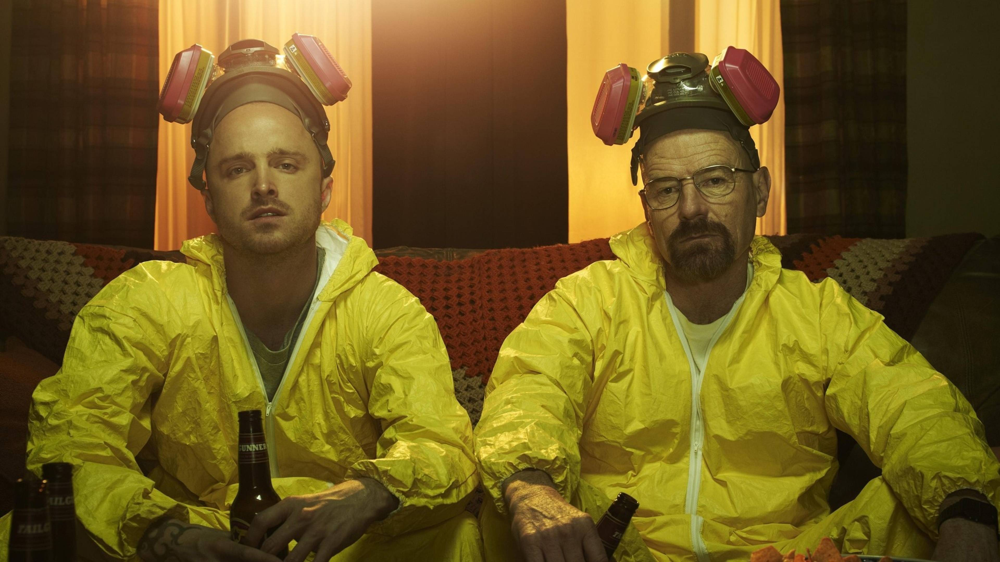
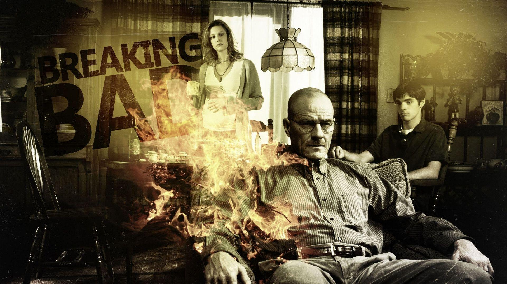

Season 1
Summary
Walter, diagnosed with inoperable lung cancer, conspires with Jesse to cook crystal meth to pay for his treatment and provide financial security for his family. Jesse secures an R.V. to cook in, while Walter devises a revolutionary formula using unregulated chemicals, creating a highly pure product tinted blue. After a run-in with the Mexican cartel, Walter adopts the nickname "Heisenberg" and trades his "blue sky" meth with psychotic drug lord Tuco Salamanca. The DEA and Hank, Walt's brother-in-law, become aware of Heisenberg's presence in the drug trade and begin investigating.
| Year | Award | Category | Result |
|---|---|---|---|
| 2008 | Primetime Emmy Award | Outstanding Actor in a Drama Series | Won |
| 2008 | Primetime Emmy Award | Outstanding Direction in a Drama Series | Nominated |
| 2008 | Primetime Emmy Award | Outstanding Cinematography in a Drama Series | Nominated |
| 2008 | Primetime Emmy Award | Single-Camera Picture Editing in a Drama Series | Won |
Season 2
Summary
Tuco and Walter become hostile and Tuco is killed by Hank. After a failed attempt by Walter and Jesse to start their own distribution network leaves one of their dealers arrested and one murdered, Walter hires corrupt lawyer Saul Goodman, who later connects them to high-profile drug distributor Gus Fring and hitman Mike Ehrmantraut. Jesse dates his apartment manager Jane, who introduces him to heroin, making him unreliable. After selling a shipment to Gus, Walt refuses to pay Jesse his half of the money, but Jane blackmails him. Walt returns to Jesse to apologize but instead allows an unconscious Jane to choke on her own vomit. Jesse, traumatized, enters rehab. Walt seems content until he witnesses a mid-air collision of two planes; a result of Jane's father, an air-traffic controller, becoming distraught over her death while working.
| Year | Award | Category | Result |
|---|---|---|---|
| 2009 | Primetime Emmy Award | Outstanding Actor in a Drama Series | Won |
| 2009 | Primetime Emmy Award | Outstanding Direction in a Drama Series | Nominated |
| 2009 | Primetime Emmy Award | Outstanding Cinematography in a Drama Series | Nominated |
| 2009 | Primetime Emmy Award | Single-Camera Picture Editing in a Drama Series | Won |
Season 3

Summary
Skyler learns of Walt's crimes and seeks a divorce from him. Walt briefly retires from the drug trade, but Gus offers him a job cooking meth at a hidden lab with an assistant, Gale. Hank's investigation leads him to Jesse. He finds no evidence, but assaults Jesse and is suspended from the DEA. Walt, in order to keep Jesse from suing Hank, coerces Gus into replacing Gale with Jesse as his lab assistant. Hank is attacked by Tuco's vengeful cousins and kills them, becoming paralyzed in the aftermath. Jesse's behavior becomes erratic, and Walt is forced to kill two of Gus' drug dealers to protect Jesse. After an enraged Gus orders them killed, Walt convinces Jesse to kill Gale so Gus cannot replace them.
| Year | Award | Category | Result |
|---|---|---|---|
| 2010 | Primetime Emmy Award | Outstanding Actor in a Drama Series | Won |
| 2010 | Primetime Emmy Award | Outstanding Supporting Actor in a Drama Series | Won |
| 2010 | Primetime Emmy Award | Outstanding Direction in a Drama Series | Nominated |
| 2010 | Primetime Emmy Award | Outstanding Cinematography in a Drama Series | Nominated |
| 2010 | Primetime Emmy Award | Single-Camera Picture Editing in a Drama Series | Nominated |
Season 4
Summary
Gus tightens security at the lab after Gale's death. Gus and Mike drive a wedge between Walt and Jesse, coercing Jesse to be their solitary cook while at the same time eliminating the Mexican cartel. Skyler accepts Walt's meth cooking and conspires with Saul to launder the earnings. Hank, in recovery, tracks Gale's death to Gus and the drug trade, so he plans to kill Hank. Walt tricks Jesse into turning against Gus, and convinces Hector Salamanca, the last living member of the cartel, to detonate a bomb while meeting with Gus, killing them both.
| Year | Award | Category | Result |
|---|---|---|---|
| 2011 | Primetime Emmy Award | Outstanding Actor in a Drama Series | Won |
| 2011 | TCAA's Award | Outstanding Actor in a Drama Series | Won |
| 2011 | Critics Choice Award | Outstanding Actor in a Drama Series | Won |
| 2011 | Primetime Emmy Award | Outstanding Direction in a Drama Series | Nominated |
| 2011 | Primetime Emmy Award | Outstanding Cinematography in a Drama Series | Nominated |
| 2011 | Primetime Emmy Award | Single-Camera Picture Editing in a Drama Series | Won |
Season 5
Summary
Hank discovers Walt is Heisenberg and begins gathering evidence. He turns to Jesse, who helps track Walt's money to the reservation. When Walt is arrested, Jack's gang arrives. They kill Hank and Steve, capture Jesse, and take most of Walter's money, leaving him one of seven barrels. Walt uses this to flee to New Hampshire. After months in hiding, Walt plans to surrender but changes course after Elliott and Gretchen publicly minimize his involvement in starting Gray Matter. Walt manipulates Elliott and Gretchen to give his earnings to Walter Jr. once he turns 18. After poisoning Lydia, Walt admits to Skyler that he manufactured meth for his own satisfaction rather than for his family. At Jack's compound, Walter kills Jack and the rest of his gang with a remote turret and frees Jesse, who kills Todd. Wounded by his own weapon, Walt asks Jesse to kill him, but he refuses. The two share a farewell glance before Jesse escapes. Walt dies from his wounds in Jack's meth lab.
| Year | Award | Category | Result |
|---|---|---|---|
| 2013 | Primetime Emmy Award | Outstanding Actor in a Drama Series | Won |
| 2013 | Golden Globe Award | Best Drama Series | Won |
| 2013 | Primetime Emmy Award | Outstanding Direction in a Drama Series | Nominated |
| 2013 | Primetime Emmy Award | Outstanding Cinematography in a Drama Series | Won |
| 2013 | Primetime Emmy Award | Single-Camera Picture Editing in a Drama Series | Won |